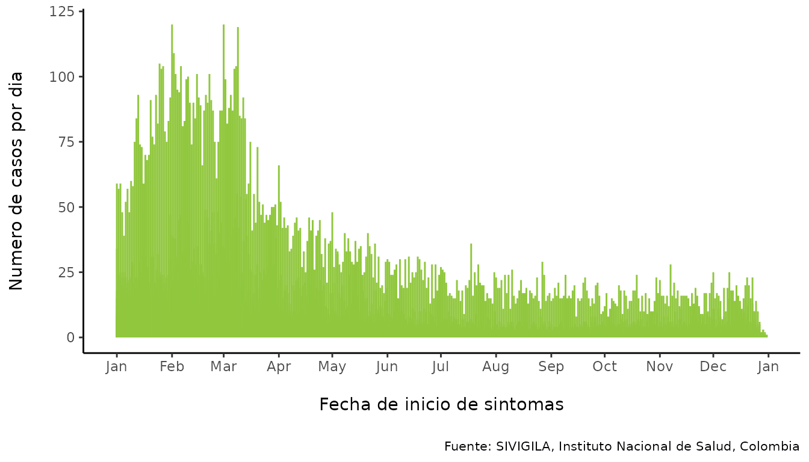
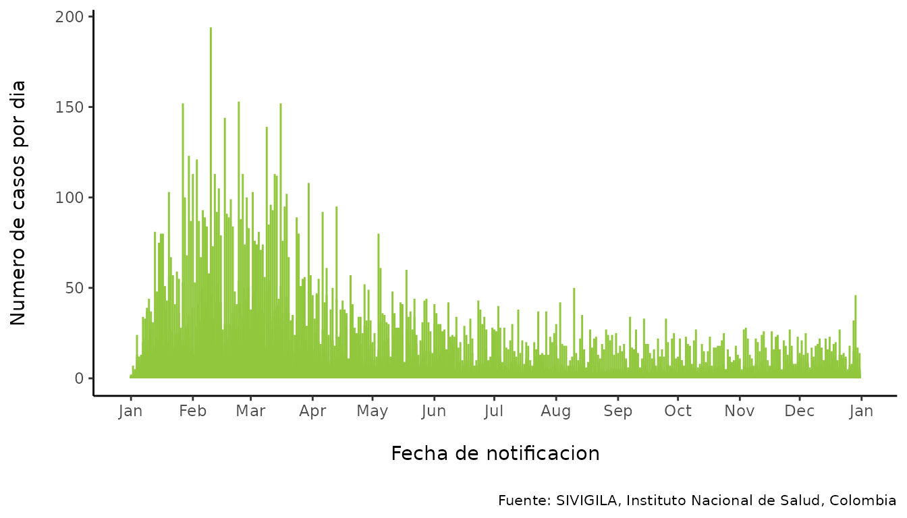
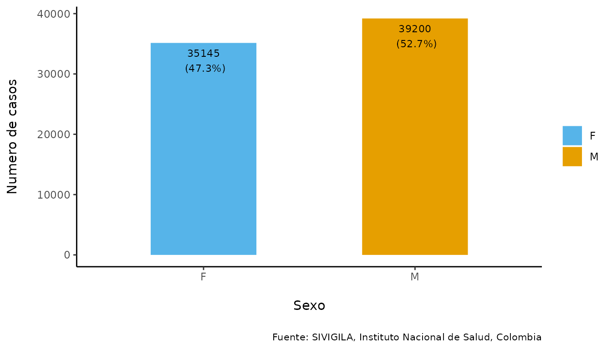
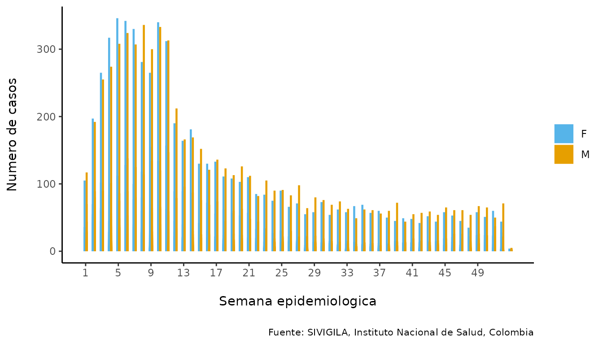
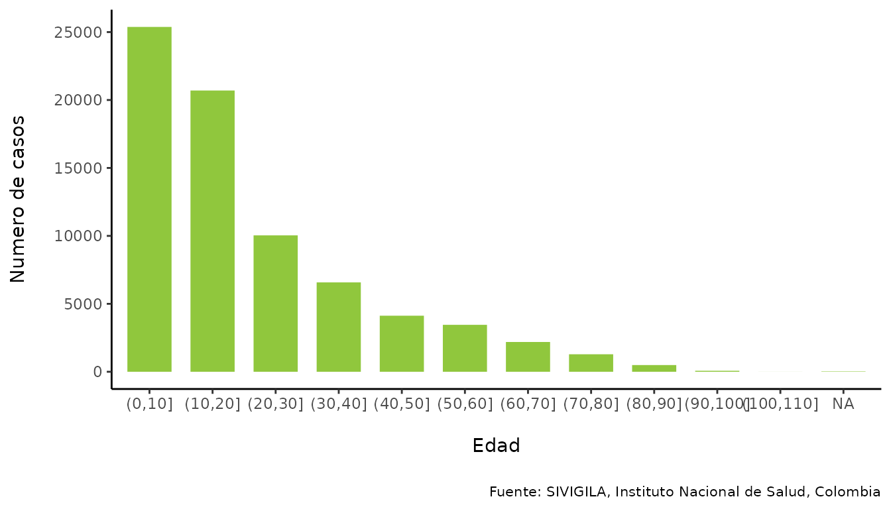
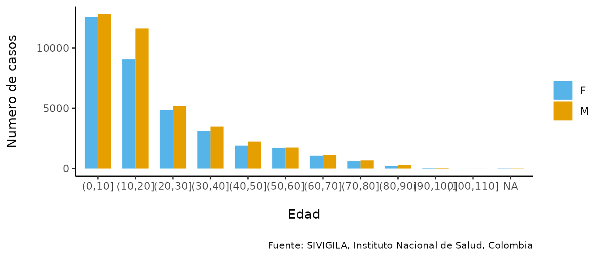
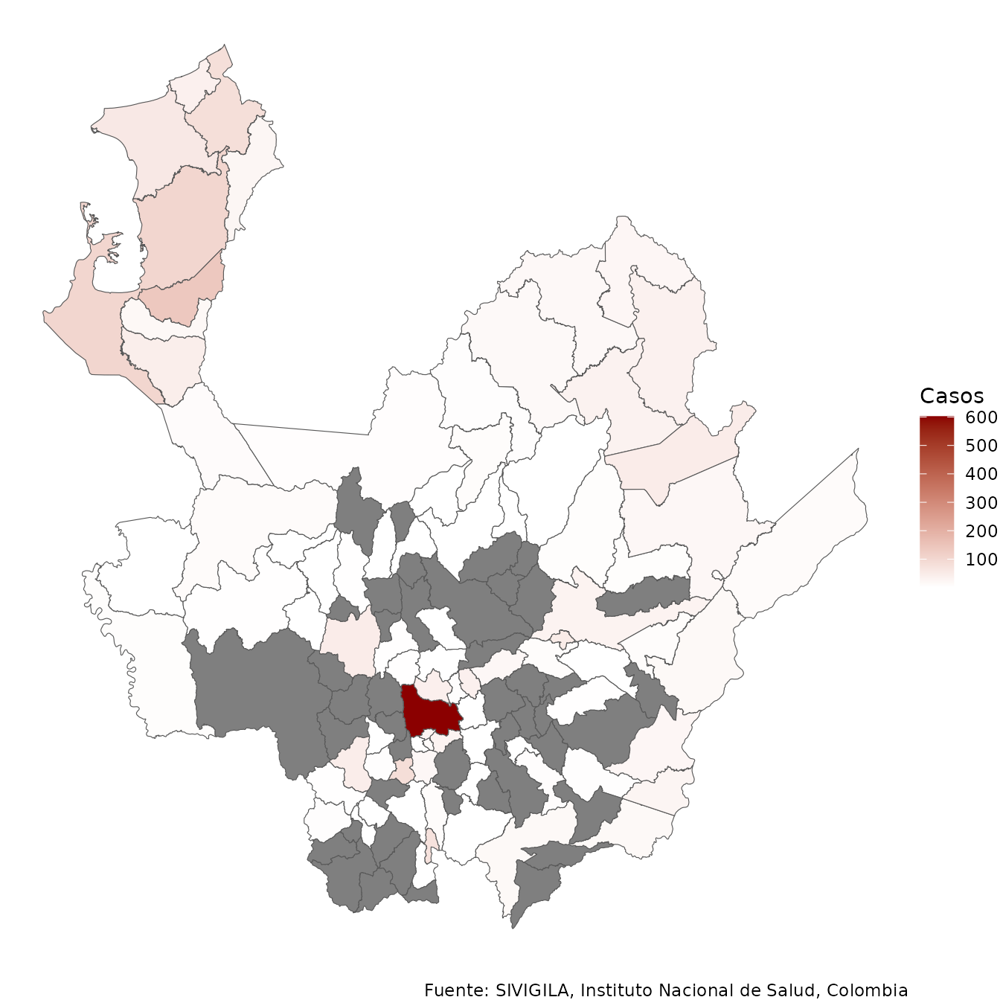

sivirep
sivirep.Rmd
library(sivirep)Descripción
La versión actual de sivirep 0.0.2 proporciona funciones para la manipulación de datos y la generación de reportes automatizados basados en las bases de datos individualizadas de casos de SIVIGILA, que es el sistema oficial de vigilancia epidemiológica de Colombia.
Motivación
América Latina ha progresado en la calidad de sus sistemas de notificación y vigilancia epidemiológica. En particular, Colombia ha mejorado a lo largo de los años la calidad, la accesibilidad y la transparencia de su sistema oficial de vigilancia epidemiológica, SIVIGILA. Este sistema está regulado por el Instituto Nacional de Salud de Colombia y es operado por miles de trabajadores de la salud en las secretarías de salud locales, hospitales y unidades primarias generadoras de datos.
Sin embargo, todavía existen desafíos, especialmente a nivel local, en cuanto a la oportunidad y la calidad del análisis epidemiológico y de los informes epidemiológicos. Estas tareas pueden requerir una gran cantidad de trabajo manual debido a limitaciones en el entrenamiento para el análisis de datos, el tiempo que se requiere invertir, la tecnología y la calidad del acceso a internet en algunas regiones de Colombia.
El objetivo de sivirep es proporcionar un conjunto de
herramientas para:
- Descargar, preprocesar y preparar los datos de SIVIGILA para su posterior análisis.
- Generar informes epidemiológicos automatizados adaptables al contexto.
- Proporcionar retroalimentación sobre el sistema de vigilancia al proveedor de la fuente de datos.
Potenciales usuarios
- Profesionales de salud pública y de epidemiología de campo que utilizan la fuente de datos de SIVIGILA a nivel local.
- Estudiantes del área de la salud y epidemiología.
- Investigadores y analistas de datos a nivel nacional e internacional.
Inicio rápido
Puedes revisar las enfermedades y los años disponibles de forma libre utilizando:
lista_eventos <- list_events()
knitr::kable(lista_eventos)| enfermedad | aa |
|---|---|
| ACCIDENTE OFIDICO | 2007, 2008, 2009, 2010, 2011, 2012, 2013, 2014, 2015, 2016, 2017, 2018, 2019, 2020, 2021 |
| AGRESIONES POR ANIMALES POTENCIALMENTE TRANSMISORES DE RABIA | 2007, 2008, 2009, 2010, 2011, 2012, 2013, 2014, 2015, 2016, 2017, 2018, 2019, 2020, 2021 |
| ANOMALIAS CONGENITAS | 2007, 2008, 2009, 2010, 2011, 2012, 2013, 2014, 2015, 2016, 2017, 2018, 2019, 2020, 2021 |
| BAJO PESO AL NACER | 2012, 2013, 2014, 2015, 2016, 2017, 2018, 2019, 2020, 2021 |
| CÁNCER DE LA MAMA Y CUELLO UTERINO | 2007, 2008, 2009, 2010, 2011, 2012, 2013, 2014, 2015, 2016, 2017, 2018, 2019, 2020, 2021 |
| CÁNCER INFANTIL | 2007, 2008, 2009, 2010, 2011, 2012, 2013, 2014, 2015, 2016, 2017, 2018, 2019, 2020, 2021 |
| CHAGAS | 2007, 2008, 2009, 2010, 2011, 2012, 2013, 2014, 2015, 2016, 2017, 2018, 2019, 2020, 2021 |
| CHIKUNGUNYA | 2007, 2008, 2009, 2010, 2011, 2012, 2013, 2014, 2015, 2016, 2017, 2018, 2019, 2020, 2021 |
| DENGUE | 2007, 2008, 2009, 2010, 2011, 2012, 2013, 2014, 2015, 2016, 2017, 2018, 2019, 2020, 2021 |
| DENGUE GRAVE | 2007, 2008, 2009, 2010, 2011, 2012, 2013, 2014, 2015, 2016, 2017, 2018, 2019, 2020, 2021 |
| DIFTERIA | 2007, 2008, 2009, 2010, 2011, 2012, 2013, 2014, 2015, 2016, 2017, 2018, 2019, 2021 |
| ENCEFALITIS DEL NILO OCCIDENTAL EN HUMANOS | 2007, 2008, 2009, 2010, 2011, 2012, 2013, 2014, 2015, 2016, 2017 |
| ENCEFALITIS EQUINA DEL OESTE EN HUMANOS | 2007, 2008, 2009, 2010, 2011, 2012, 2013, 2014, 2015, 2016, 2017 |
| ENCEFALITIS EQUINA VENEZOLANA EN HUMANOS | 2007, 2008, 2009, 2010, 2011, 2012, 2013, 2014, 2015, 2016, 2017 |
| ENDOMETRITIS PUERPERAL | 2007, 2008, 2009, 2010, 2011, 2012, 2013, 2014, 2015, 2016, 2017 |
| ENFERMEDADES HUERFANAS - RARAS | 2007, 2008, 2009, 2010, 2011, 2012, 2013, 2014, 2015, 2016, 2017 |
| ESI - IRAG (VIGILANCIA CENTINELA) | 2007, 2008, 2009, 2010, 2011, 2012, 2013, 2014, 2015, 2016, 2017, 2018, 2019, 2020, 2021 |
| EVENTO ADVERSO SEGUIDO A LA VACUNACION | 2007, 2008, 2009, 2010, 2011, 2012, 2013, 2014, 2015, 2016, 2017, 2018, 2019, 2020, 2021 |
| FIEBRE AMARILLA | 2007, 2008, 2009, 2010, 2011, 2012, 2013, 2014, 2015, 2016, 2017, 2018 |
| FIEBRE TIFOIDEA Y PARATIFOIDEA | 2007, 2008, 2009, 2010, 2011, 2012, 2013, 2014, 2015, 2016, 2017, 2018, 2019, 2020, 2021 |
| HEPATITIS A | 2007, 2008, 2009, 2010, 2011, 2012, 2013, 2014, 2015, 2016, 2017, 2018, 2019, 2020, 2021 |
| HEPATITIS C | 2018, 2019, 2020, 2021 |
| HIPOTIROIDISMO CONGENITO | 2007, 2008, 2009, 2010, 2011, 2012, 2013, 2014, 2015, 2016, 2017, 2018, 2019, 2020, 2021 |
| INFECCION ASOCIADA A DISPOSITIVOS | 2007, 2008, 2009, 2010, 2011, 2012, 2013, 2014, 2015, 2016, 2017 |
| INFECCION RESPIRATORIA AGUDA GRAVE IRAG INUSITADA | 2007, 2008, 2009, 2010, 2011, 2012, 2013, 2014, 2015, 2016, 2017, 2018, 2019, 2020, 2021 |
| INTOXICACION POR FARMACOS | 2007, 2008, 2009, 2010, 2011, 2012, 2013, 2014, 2015, 2016, 2017, 2018, 2019, 2020, 2021 |
| INTOXICACION POR METALES PESADOS | 2007, 2008, 2009, 2010, 2011, 2012, 2013, 2014, 2015, 2016, 2017, 2018, 2019, 2020, 2021 |
| INTOXICACION POR METANOL | 2007, 2008, 2009, 2010, 2011, 2012, 2013, 2014, 2015, 2016, 2017, 2018, 2019, 2020, 2021 |
| INTOXICACION POR MONOXIDO DE CARBONO Y OTROS GASES | 2007, 2008, 2009, 2010, 2011, 2012, 2013, 2014, 2015, 2016, 2017, 2018, 2019, 2020, 2021 |
| INTOXICACION POR OTRAS SUSTANCIAS QUIMICAS | 2007, 2008, 2009, 2010, 2011, 2012, 2013, 2014, 2015, 2016, 2017, 2018, 2019, 2020, 2021 |
| INTOXICACION POR PLAGUICIDAS | 2007, 2008, 2009, 2010, 2011, 2012, 2013, 2014, 2015, 2016, 2017, 2018, 2019, 2020, 2021 |
| INTOXICACION POR SOLVENTES | 2007, 2008, 2009, 2010, 2011, 2012, 2013, 2014, 2015, 2016, 2017, 2018, 2019, 2020, 2021 |
| INTOXICACION POR SUSTANCIAS PSICOACTIVAS | 2007, 2008, 2009, 2010, 2011, 2012, 2013, 2014, 2015, 2016, 2017, 2018, 2019, 2020, 2021 |
| ISO | 2007, 2008, 2009, 2010, 2011, 2012, 2013, 2014, 2015, 2016, 2017 |
| LEISHMANIASIS CUTANEA | 2007, 2008, 2009, 2010, 2011, 2012, 2013, 2014, 2015, 2016, 2017, 2018, 2019, 2020, 2021 |
| LEISHMANIASIS MUCOSA | 2007, 2008, 2009, 2010, 2011, 2012, 2013, 2014, 2015, 2016, 2017, 2018, 2019, 2020, 2021 |
| LEISHMANIASIS VISCERAL | 2007, 2008, 2009, 2010, 2011, 2012, 2013, 2014, 2015, 2016, 2017, 2018, 2019, 2020, 2021 |
| LEPRA | 2007, 2008, 2009, 2010, 2011, 2012, 2013, 2014, 2015, 2016, 2017, 2018, 2019, 2020, 2021 |
| LESIONES POR ARTEFACTOS EXPLOSIVOS (PÓLVORA Y MINAS ANTIPERSONAL) | 2007, 2008, 2009, 2010, 2011, 2012, 2013, 2014, 2015, 2016, 2017, 2018, 2019, 2020, 2021 |
| LEUCEMIA AGUDA PEDIATRICA LINFOIDE | 2007, 2008, 2009, 2010, 2011, 2012, 2013, 2014, 2015, 2016, 2017, 2018, 2019, 2020, 2021 |
| LEUCEMIA AGUDA PEDIATRICA MIELOIDE | 2007, 2008, 2009, 2010, 2011, 2012, 2013, 2014, 2015, 2016, 2017, 2018, 2019, 2020, 2021 |
| MALARIA ASOCIADA (FORMAS MIXTAS) | 2007, 2008, 2009, 2010, 2011, 2012, 2013, 2014, 2015, 2016, 2017, 2018, 2019, 2020, 2021 |
| MALARIA COMPLICADA | 2007, 2008, 2009, 2010, 2011, 2012, 2013, 2014, 2015, 2016, 2017, 2018, 2019, 2020, 2021 |
| MALARIA FALCIPARUM | 2007, 2008, 2009, 2010, 2011, 2012, 2013, 2014, 2015, 2016, 2017, 2018, 2019, 2020, 2021 |
| MALARIA VIVAX | 2007, 2008, 2009, 2010, 2011, 2012, 2013, 2014, 2015, 2016, 2017, 2018, 2019, 2020, 2021 |
| MENINGITIS OTROS | 2007, 2008, 2009, 2010, 2011, 2012, 2013, 2014, 2015, 2016, 2017 |
| MENINGITIS MENINGOCÓCICA | 2007, 2008, 2009, 2010, 2011, 2012, 2013, 2014, 2015, 2016, 2017, 2018, 2019, 2019, 2020, 2021 |
| MENINGITIS POR HAEMOPHILUS INFLUENZAE | 2007, 2008, 2009, 2010, 2011, 2012, 2013, 2014, 2015, 2016, 2017, 2018, 2019, 2019, 2020, 2021 |
| MENINGITIS POR NEUMOCOCO | 2007, 2008, 2009, 2010, 2011, 2012, 2013, 2014, 2015, 2016, 2017, 2018, 2019, 2019, 2020, 2021 |
| MENINGITIS TUBERCULOSA | 2007, 2008, 2009, 2010, 2011, 2012, 2013, 2014, 2015, 2016, 2017, 2018, 2019, 2020, 2021 |
| MORBILIDAD MATERNA EXTREMA | 2007, 2008, 2009, 2010, 2011, 2012, 2013, 2014, 2015, 2016, 2017, 2018, 2019, 2020, 2021 |
| MORBILIDAD POR IRA | 2012, 2013, 2014, 2015, 2016, 2017, 2018, 2019, 2020, 2021 |
| MORTALIDAD MATERNA | 2007, 2008, 2009, 2010, 2011, 2012, 2013, 2014, 2015, 2016, 2017, 2018, 2019, 2020, 2021 |
| MORTALIDAD PERINATAL Y NEONATAL TARDIA | 2008, 2009, 2010, 2011, 2012, 2013, 2014, 2015, 2016, 2017, 2018, 2019, 2020, 2021 |
| MORTALIDAD POR DENGUE | 2007, 2008, 2009, 2010, 2011, 2012, 2013, 2014, 2015, 2016, 2017, 2018, 2019, 2020, 2021 |
| MORTALIDAD POR EDA 0-4 AÑOS | 2007, 2008, 2009, 2010, 2011, 2012, 2013, 2014, 2015, 2016, 2017, 2018, 2019, 2019, 2020, 2021 |
| MORTALIDAD POR IRA | 2007, 2008, 2009, 2010, 2011, 2012, 2013, 2014, 2015, 2016, 2017, 2018, 2019, 2020, 2021 |
| MORTALIDAD POR MALARIA | 2007, 2008, 2009, 2010, 2011, 2012, 2013, 2014, 2015, 2016, 2017, 2018, 2019, 2020, 2021 |
| PARALISIS FLACIDA AGUDA (MENORES DE 15 AÑOS) | 2007, 2008, 2009, 2010, 2011, 2012, 2013, 2014, 2015, 2016, 2017, 2018, 2019, 2020 |
| PAROTIDITIS | 2007, 2008, 2009, 2010, 2011, 2012, 2013, 2014, 2015, 2016, 2017, 2018, 2019, 2020, 2021 |
| RABIA HUMANA | 2007, 2008, 2009, 2010, 2011, 2012, 2013, 2014, 2015, 2016, 2017, 2020 |
| RUBEOLA | 2007, 2008, 2009, 2010, 2011, 2012, 2013, 2014, 2015, 2016, 2017 |
| SARAMPION | 2007, 2008, 2009, 2010, 2011, 2012, 2013, 2014, 2015, 2016, 2017, 2018, 2019, 2020 |
| SINDROME DE RUBEOLA CONGENITA | 2007, 2008, 2009, 2010, 2011, 2012, 2013, 2014, 2015, 2016, 2017 |
| TETANOS ACCIDENTAL | 2007, 2008, 2009, 2010, 2011, 2012, 2013, 2014, 2015, 2016, 2017, 2018, 2019, 2020, 2021 |
| TETANOS NEONATAL | 2007, 2008, 2009, 2010, 2011, 2012, 2013, 2014, 2015, 2016, 2017, 2018, 2019, 2020, 2021 |
| TOS FERINA | 2007, 2008, 2009, 2010, 2011, 2012, 2013, 2014, 2015, 2016, 2017, 2018, 2019, 2020, 2021 |
Versiones futuras
Las versiones futuras de sivirep podrían incluir:
- Interacción con otras fuentes de datos en Colombia.
- Otros sistemas de vigilancia epidemiológica en América Latina.
Contribuciones
Las contribuciones son bienvenidas via pull requests.
Los contribuyentes al paquete incluyen:
Geraldine Gómez-Millán (author)
Zulma M. Cucunubá (author)
Hugo Gruson (contributor)
Laura Gómez-Bermeo (contributor to documentation)
Miguel Gámez (contributor)
Código de conducta
Por favor, ten en cuenta que el proyecto sivirep se
publica con un Código
de Conducta para Contribuyentes. Al contribuir a este proyecto,
aceptas cumplir con sus términos.
Comenzar
Para reportes automatizados
Después de la instalación de sivirep, puedes comenzar
importando el paquete a través del siguiente comando:
library(sivirep)Ante de iniciar con el reporte automatizado, revisa la lista de
enfermedades disponibles para hacer un reporte con sivirep
en:
Actualmente, sivirep provee una plantilla de reporte
llamada Reporte Básico {sivirep}, la cual contiene seis
secciones y recibe los siguientes parámetros de entrada: el nombre de la
enfermedad, el año, el nombre de departamento (opcional) y nombre del
municipio (opcional) para descargar los datos de la fuente de
SIVIGILA.
Para hacer uso de la plantilla del reporte se deben seguir los siguientes pasos:
- En RStudio hacer click ‘File/New File/R’ Markdown:

- Selecciona la opción del panel izquierdo: ‘From Template’,
después selecciona el template del reporte llamado
Reporte Básico {sivirep}, indica el nombre que deseas para el reporte (i.e. Reporte_Laura), la ubicación donde deseas guardarlo y presiona ‘Ok’.

- A continuación, podrás seleccionar el nombre de la enfermedad, el año, el departamento (opcional) y el municipio (opcional) del reporte. Esta acción descargará los datos deseados y también proporcionará la plantilla en un archivo R Markdown (.Rmd). Para esto, es importante encontrar el botón ‘Knit’, desplegar las opciones y seleccionar ‘Knit with parameters’.

Espera unos segundos mientras el informe se genera en un archivo PDF.
Puedes agregar, editar, eliminar y personalizar las secciones del reporte en el archivo R Markdown generado anteriormente.

Para obtener más detalles sobre plantillas y reportes genéricos de R Markdown, por favor consulta rmarkdown templates.
Para análisis o reportes personalizados
Esta sección proporciona un conjunto básico de instrucciones para
usar sivirep 0.0.2 si: - Ya has producido un archivo .Rmd y
deseas editar un reporte. - Deseas realizar análisis personalizados sin
un archivo .Rmd.
1. Importación de datos de SIVIGILA
La fuente de SIVIGILA proporciona los datos de la lista de casos
históricos hasta el último año epidemiológico cerrado. El cierre de un
año epidemiológico generalmente ocurre en abril del siguiente año (por
ejemplo, si estás utilizando sivirep en marzo de 2023, es
posible que puedas acceder a los datos históricos hasta diciembre de
2021) para la mayoría de las enfermedades, con algunas excepciones.
Por favor, verifica las enfermedades y años disponibles utilizando:
lista_eventos <- list_events()Una vez que hayas decidido la enfermedad y el año de la cual deseas
obtener la información, import_data_event es la función que
permite la importación de datos desde la fuente de SIVIGILA utilizando
un formato parametrizado basado en la enfermedad y el año.
data_event <- import_data_event(year = 2020,
nombre_event = "dengue")💡 Tip 1 - Evita retrasos en el tiempo al importar los datos
-
sivirep0.0.2 está diseñado para ayudar con el acceso a la fuente de SIVIGILA. Este proceso de descarga de información puede tomar unos minutos dependiendo del tamaño del conjunto de datos. Para evitar descargar los mismos datos repetidamente, puedes utilizarcache = TRUEen la funciónimport_data_event. Esta opción está configurada de forma predeterminada.
2. Limpieza de datos de SIVIGILA
Los datos de SIVIGILA son una fuente de información oficial altamente confiable, con certificación ISO de calidad de datos. Sin embargo, a veces puede haber algunos valores atípicos en los datos que requieran una limpieza adicional.
sivirep proporciona una función genérica llamada
limpiar_data_sivigila que envuelve diversas tareas para
identificar y corregir errores, inconsistencias y discrepancias en los
conjuntos de datos con el fin de mejorar su calidad y precisión. Este
proceso puede incluir la eliminación de duplicados, la corrección de
errores tipográficos, el reemplazo de valores faltantes y la validación
de datos, entre otras tareas, como eliminar fechas improbables, limpiar
códigos de geolocalización y estandarizar los nombres de las columnas y
las categorías de edad.
data_event_limp <- limpiar_data_sivigila(data_event = data_event, year = 2020)Las funciones de limpieza dentro de
limpiar_data_sivigila se han recopilado y creado en base a
la experiencia de epidemiólogos de campo. Estas pueden incluir funciones
internas como:
limpiar_encabezado: función que limpia y estandariza los nombres de las columnas de los datos de lista de casos de SIVIGILA basándose en el diccionario de datos de SIVIGILA.limpiar_edad_event: función que limpia las edades de los datos de lista de casos de SIVIGILA.format_fecha: función que da un formato específico a una fecha.limpiar_fecha_event: función que limpia las fechas de los datos de enfermedades.limpiar_cods_dpto: función que limpia los códigos geográficos de departamentos en los datos de enfermedades.
El usuario puede utilizar estas funciones individualmente o
simplemente utilizar la función envolvente genérica
limpiar_data_sivigila.
3. Filtrar casos
sivirep proporciona una función que permite filtrar los
datos de enfermedades por departamento o nombre del municipio llamada
geo_filtro. Esto permite al usuario crear un informe a
nivel subnacional, seleccionando casos específicos basados en la
ubicación geográfica.
data_event_filtrada <- geo_filtro(data_event = data_event_limp,
nombre_dpto = "Antioquia")4. Distribución temporal de casos
En sivirep, la distribución temporal de casos se define
por las variables de fecha de inicio de síntomas y fecha de
notificación. Para cada una de estas variables, existen funciones
especializadas para agrupar los datos y generar los gráficos.
4.1. Agrupar los datos por fecha de inicio de síntomas en la escala temporal deseada
Para generar la distribución de casos por fecha de inicio de
síntomas, es necesario agrupar los datos por estas variables.
sivirep proporciona una función que permite esta agrupación
llamada agrupar_fecha_inisintomas, en la cual puedes
especificar la unidad de tiempo para agrupar estas fechas. Los valores
permitidos para este parámetro son: día y mes.
casos_ini_sintomas_dia <- agrupar_fecha_inisintomas(data_event =
data_event_limp,
tipo = "day")
casos_ini_sintomas_mes <- agrupar_fecha_inisintomas(data_event =
data_event_limp,
tipo = "month")💡 Tip 2 - Obtén los primeros n meses con más casos
- Al construir una sección del reporte o analizar estos datos, puede
ser útil obtener los meses con más casos. En
sivirep, puedes utilizar la funciónobtener_meses_mas_casospara obtener esta información.
El gráfico que permite visualizar esta distribución se debe generar
con la función plot_fecha_inisintomas. Ten en cuenta que,
incluso si has agrupado los datos por día, es posible que prefieras
representarlo por mes, como en:
plot_fecha_inisintomas(data_agrupada = casos_ini_sintomas_dia,
uni_marca = "months")
4.2. Agrupar los datos por fecha de notificación en la escala temporal deseada
El proceso para generar la distribución de casos por fecha de
notificación consiste en agrupar los datos de enfermedades por esta
variable. Puedes utilizar la siguiente función de sivirep
para hacer esto:
casos_fecha_notificacion_dia <- agrupar_fecha_notifica(data_event =
data_event_limp,
tipo = "day")
casos_fecha_notificacion_mes <- agrupar_fecha_notifica(data_event =
data_event_limp,
tipo = "month")El gráfico que permite visualizar esta distribución debe generarse
con la función plot_fecha_notifica. Ten en cuenta que,
aunque hayas agrupado los datos por día, es posible que prefieras
representarlos por mes, como en:
plot_fecha_notifica(data_agrupada = casos_fecha_notificacion_dia,
uni_marca = "months")
5.1. Variable de sexo
Cuando se analizan o se informan datos de enfermedades, a menudo es necesario determinar la distribución de casos por género o sexo. Sin embargo, la fuente de SIVIGILA solo registra el sexo.
sivirep proporciona una función que agrega y calcula
automáticamente los porcentajes por sexo después del proceso de
limpieza.
casos_sex <- agrupar_sex(data_event = data_event_limp,
porcentaje = TRUE)Además, sivirep cuenta con una función para generar el
gráfico por esta variable llamada plot_sex:
plot_sex(data_agrupada = casos_sex)
La distribución de casos por sexo y semana epidemiológica se puede
generar utilizando la función agrupar_sex_semanaepi
proporcionada por sivirep.
casos_sex_semanaepi <- agrupar_sex_semanaepi(data_event = data_event_limp)La función de visualización correspondiente es
plot_sex_semanaepi, que sivirep proporciona
para mostrar la distribución de casos por sexo y semana
epidemiológica.
plot_sex_semanaepi(data_agrupada = casos_sex_semanaepi)
5.2. Variable de edad
La edad es una variable importante para analizar, ya que es un factor de riesgo conocido para muchas enfermedades. Ciertas enfermedades y condiciones tienden a ocurrir con más frecuencia en grupos de edad específicos, y esta distribución puede ayudar a identificar poblaciones con mayor riesgo e implementar estrategias de prevención y control dirigidas.
sivirep proporciona una función llamada
agrupar_edad, que puede agrupar los datos de enfermedades
por grupos de edad. De forma predeterminada, esta función produce rangos
de edad con intervalos de 10 años. Además, los usuarios pueden
personalizar un rango de edad diferente.
casos_edad <- agrupar_edad(data_event = data_event_limp, interval_edad = 10)La función de visualización correspondiente es
plot_edad.
plot_edad(data_agrupada = casos_edad)
5.3. Edad y sexo simultáneamente
sivirep proporciona una función llamada
agrupar_edad_sex, que puede agrupar los datos de
enfermedades por rangos de edad y sexo de forma simultánea y obtener el
número de casos y los porcentajes correspondientes. Además, permite
personalizar el intervalo de edad.
casos_edad_sex <- agrupar_edad_sex(data_event = data_event_limp,
interval_edad = 10)La función de visualización correspondiente es
plot_edad_sex.
plot_edad_sex(data_agrupada = casos_edad_sex)
6. Distribución espacial de casos
Obtener la distribución espacial de los casos es útil para identificar áreas con una alta concentración de casos, agrupaciones de enfermedades y factores de riesgo ambientales o sociales.
En Colombia, existen 32 unidades geográficas administrativas (adm1)
llamadas departamentos. sivirep proporciona una función
llamada agrupar_mun que permite obtener un data.frame de
casos agrupados por departamento o municipio.
dist_esp_dept <- agrupar_mun(data_event = data_event_filtrada,
dept_nombre = "Antioquia")Actualmente, con la función llamada plot_map, el usuario
puede generar un mapa estático de Colombia que muestra la distribución
de casos por departamentos y municipios.
mapa
💡 Tip 3 - Obtén la fila con más casos
- Al construir una sección del reporte o analizar estos datos, puede
ser útil saber cuál es la variable que tiene la mayoría de los casos. En
sivirep, puedes utilizar la funciónobtener_fila_mas_casospara obtener esta información. Esta función funciona con cualquier conjunto de datos que contenga una columna llamada “casos” en cualquier nivel de agregación.